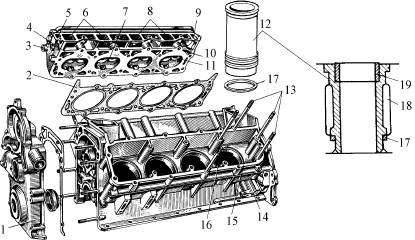
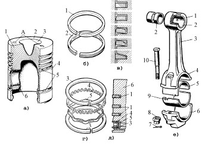
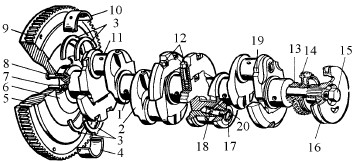

Кривошипно-шатунный механизм (КШМ) служит для преобразования прямолинейного возвратно-поступательного движения поршня во вращательное движение коленчатого вала.
КШМ состоит из неподвижных и подвижных деталей. Группу неподвижных деталей составляют блок цилиндров, головки цилиндров, гильзы, вкладыши, крышки коренных подшипников.
В группу подвижных деталей входят поршни, поршневые кольца, поршневые пальцы, шатуны, коленчатый вал с маховиком.
Неподвижные детали КШМ. Блок цилиндров является базовой деталью(остовом) двигателя (рис. 1). На нем устанавливаются все основные механизмы и системы двигателя.
Рисунок 1 Неподвижные детали кривошипно-шатунного механизма V-образного двигателя:
1 – крышка блока зубчатых колес ГРМ; 2 – сталеасбестовая прокладка; 3 – головка блока цилиндров; 4, 10 – входные отверстия водяной рубашки; 5, 9 – выходные отверстия водяной рубашки; 6, 8 – каналы для подачи горючей смеси; 11 – седло клапана; 12 – мокрая гильза; 13 – шпильки крепления; 14 –верхняя часть; 15 – блок цилиндров; 16 – гнезда гильз; 17 – резиновое уплотнительное кольцо; 18 – водяная рубашка; 19 - вставка
В автотракторных многоцилиндровых двигателях с жидкостным охлаждением все цилиндры выполняются в виде общей отливки, которая и называется блоком цилиндров. Такая конструкция обладает наиболее высокой жесткостью и хорошей технологичностью. С раздельными цилиндрами в настоящее время выполняются только двигатели воздушного охлаждения.
Блок цилиндров работает в условиях значительного до 2000 °С и неравномерного нагрева и давления (9,0…10,0 МПа). Чтобы противостоять действию значительных силовых и температурных нагрузок, блок цилиндров должен обладать высокой жесткостью, обеспечивающей минимальные деформации всех его элементов, гарантировать герметичность всех полостей (цилиндры, рубашка охлаждения, каналы и т. д.), иметь высокий срок службы, простую и технологичную конструкцию.
Для изготовления блока цилиндров применяют серый или легированный чугун, а также алюминиевые сплавы. Наиболее предпочтительным материалом для изготовления блока цилиндров в настоящее время является чугун, т.к. он дешев, обладает большой прочностью и мало поддается температурным деформациям. Иногда блок цилиндров отливают из высокопрочного хромомедного чугуна.
Существенным недостатком блоков из алюминиевых сплавов является их повышенное тепловое расширение и относительно невысокие механические качества.
Расположение цилиндров может быть однорядным (вертикальным или наклонным), двухрядным или V-образным, с углом развала между цилиндрами 60°, 75°, 90°. Двигатели с углом развала 180° называются оппозитными. V-образная компоновка получила широкое распространение, так как обеспечивает большую компактность и меньшую удельную массу двигателя.
На двигателях с однорядным расположением цилиндров их номеруют, начиная с переднего. На V-образных двигателях номера присваивают вначале правому ряду цилиндров, начиная с переднего, а затем маркируют левый ряд.
Цилиндр в большинстве автотракторных двигателей выполняется в виде гильз, устанавливаемых в блок. Гильзы по способу установки делятся на сухие и мокрые.
Мокрые гильзы, омываемые снаружи охлаждающей жидкостью, обеспечивают лучший тепло отвод. Герметичность мокрой гильзы обеспечивают уплотнением нижней части резиновым кольцом 17 (рис. 1) и установкой медной прокладки под верхним буртиком. Применение мокрых гильз улучшает отвод от цилиндров избыточного тепла, однако снижает жесткость блока цилиндров.
Сухие гильзы используются преимущественно в двухтактных двигателях, где применение мокрых гильз затруднительно.
Гильза воспринимает высокое давление рабочих газов, имеющих значительную температуру. Поэтому гильзы изготовляют, как правило, из ковкого легированного чугуна или хромомарганцевого чугуна методом центробежного литья, хорошо противостоящего эрозийному и абразивному износу. Внутренняя поверхность гильзы – зеркало цилиндра – тщательно обработана. Иногда зеркало цилиндра покрывается плазменным керамическим напылением на основе двуокиси циркония.
Поскольку условия работы верхней части гильзы наиболее тяжелые, а изнашивается она наиболее интенсивно, в современных двигателях равномерность износа цилиндров по высоте обеспечивается короткими вставками 19 из противокоррозионного высоколегированного аустенитного чугуна.
Головка цилиндров 3 (рис. 1) служит для размещения камер сгорания, впускных и выпускных клапанов, свечей зажигания или форсунок. В процессе работы двигателя головка цилиндров подвергается воздействию высоких температур и давлений. Нагрев отдельных частей головки неравномерен, т.к. одни из них соприкасаются с продуктами сгорания, имеющими температуру до 2500°С, а другие омываются охлаждающей жидкостью. Основные требования к конструкции головки цилиндров – высокая жесткость, исключающая деформации от механических нагрузок и коробление при рабочих температурах; простота; технологичность конструкции и небольшая масса.
Головка цилиндров выполняется отливкой из серого легированного чугуна, хромомолибденового чугуна или алюминиевого сплава. Часто на поверхности камер сгорания, впускных и выпускных каналов наносится плазменное керамическое покрытие на основе двуокиси циркония. Выбор материала зависит от типа двигателя. В карбюраторных двигателях, где сжимается горючая смесь, предпочтение отдается более теплопроводным алюминиевым сплавам, т. к. это обеспечивает бездетонационную работу. В дизельных двигателях, где сжимается воздух, головка цилиндров из чугуна способствует повышению температуры стенок камер сгорания, что улучшает протекание рабочего процесса, особенно при запуске в холодное время.
Головки цилиндров могут выполняться индивидуальными или общими. Индивидуальные головки, как правило, применяют в двигателях воздушного охлаждения. В большинстве двигателей, имеющих жидкостное охлаждение, применяют общие головки для каждого ряда цилиндров. В некоторых случаях, при большой длине блока цилиндров, применяют головки для группы цилиндров.
У карбюраторных двигателей и у некоторых типов дизелей обычно камеры сгорания располагают в головках цилиндров. Форма и расположение камер сгорания, впускных и выпускных каналов являются важным конструктивным параметром, определяющим мощностные и экономические показатели двигателей. Форма камеры сгорания должна обеспечивать наилучшие условия для наполнения цилиндра свежим зарядом, полное и бездетонационное сгорание смеси, а также хорошую очистку цилиндра от продуктов сгорания.
Подвижные детали КШМ. Поршень (рис. 2, а) воспринимает давление газов и передает его через поршневой палец и шатун на коленчатый вал.
В двухтактных двигателях наряду с этим поршень выполняет роль золотника механизма газораспределения. Поршни работают в весьма тяжелых условиях: они испытывают воздействие горячих газов и воспринимают большие динамические нагрузки. В связи с тяжелыми условиями работы поршень должен обладать высокой прочностью, небольшой массой, хорошей теплопроводностью и износостойкостью.
Для современных двигателей, работающих с большой частотой вращения коленчатого вала и с большими нагрузками, наиболее полно этим требованиям отвечают поршни, изготовленные из алюминиевого сплава или из высококремнистого алюминиевого сплава с содержанием кремния 12%. Для тихоходных двигателей поршни изготовляют из чугуна. Иногда в алюминиевых поршнях под верхнее компрессионное кольцо используются неризистовые вставки. Возможно покрытие днища поршня плазменным напылением составами на основе двуокиси циркония. Алюминиевые поршни дизельных двигателей могут иметь камеру сгорания с анодированными кромками.
Применение поршней из алюминиевых сплавов дает возможность снизить конструкционную массу и, следовательно, силы инерции на 20…30% по сравнению с чугунными. Наряду с этим поршни из алюминиевого сплава имеют и недостатки: меньшую механическую прочность, повышенный износ, больший коэффициент линейного расширения (в 2…2,5 раза).
Поскольку поршень непосредственно охлаждаться не может, он нагревается значительно сильнее, чем охлаждаемая гильза. Для предотвращения заклинивания поршня его устанавливают в цилиндр с зазором. Поскольку днище и головка поршня нагреваются интенсивнее, чем юбка, зазор между цилиндром и головкой делают большим. Иногда для обеспечения охлаждения поршня используются специальные форсунки в смазочной системе, которые подают разбрызгивают масло на внутреннюю поверхность поршня.
Рисунок 2 Подвижные детали КШМ:
а) поршень: 1 – головка; 2 – днище; 3 – камера сгорания; 4 – юбка (направляющая часть); 5 – канавки; 6 – бобышка; А – метка; б) внешний вид поршневых колец; в) формы сечения компрессионных колец; г) составное маслосъемное кольцо; д) расположение колец на поршне: 1 – компрессионные кольца; 2 – маслосъемное кольцо; 3 – плоские стальные кольца; 4 – осевой расширитель; 5 – радиальный расширитель; 6 – поршень; е) шатун: 1 – верхняя головка шатуна; 2 – втулка верхней головки; 3 – стержень шатуна; 4 – нижняя головка шатуна; 5 – вкладыш шатунного подшипника; 6 – крышка нижней головки шатуна; 7 – шплинт; 8 – корончатая гайка; 9 – фиксирующий усик вкладыша; 10 – шатунный болт
Конструкция и размеры поршня определяются главным образом величиной и скоростью нарастания давления газов и быстроходностью двигателя. Поршни дизелей имеют более массивную и жесткую конструкцию, большее число поршневых колец. Канавка под верхнее поршневое кольцо может быть армирована залитым в поршень кольцедержателем. На дизельных двигателях с турбонаддувом могут использоваться армированные бронзовыми втулками отверстия под поршневой палец в бобышках.
В практике моторостроения для повышения прочностных параметров поршня его изготавливаю составным – стальная головка и алюминиевый корпус. Компрессионные кольца располагаются в канавках головки поршня, а маслосъемные – в канавке корпуса на стыке со стальной головкой.
На долговечность поршня и бесшумность его работы большое влияние оказывает размещение оси поршневого пальца. С целью обеспечения одинаковых условий работы поршня при различных направлениях его движения ось поршневого пальца несколько смещают вниз и располагают на высоте 0,64…0,68 рабочей высоты юбки. Чтобы избежать стуков при переходе через мертвые точки, ось поршневого пальца смещают на 1,4…1,6 мм от оси поршня в сторону действия боковой силы при рабочем ходе (противоположную направлению вращения).
На дизельных двигателях с турбонаддувом используются как правило поршни, в которых предусмотрены три канавки под компрессионные кольца и одна канавка под маслосъемное кольцо и никелевыми износостойкими вставками.
Поршневой палец служит для шарнирного соединения поршня с шатуном. Для уменьшения массы и снижения сил инерции его делают пустотелым. Поршневой палец работает под воздействием ударных нагрузок, переменных по величине и направлению, подвергается изгибу и истиранию. Чтобы противостоять этим нагрузкам, поршневой палец должен иметь мягкую сердцевину и, твердую поверхность. Этим требованиям удовлетворяют поршневые пальцы, изготовленные из углеродистой или малолегированной стали. Их подвергают термической обработке – цементации на глубину 0,5…1,0 мм, с последующей поверхностной закалкой токами высокой частоты на глубину 1,0…1,5 мм. Наружную поверхность пальца шлифуют и полируют.
Подавляющее распространение на современных двигателях получили плавающие поршневые пальцы, которые могут проворачиваться как в верхней головке шатуна, так и в бобышках поршня. Такая конструкция обеспечивает более равномерный износ сопряжения. Осевая фиксация поршневого пальца осуществляется стопорными пружинными кольцами, устанавливаемыми в бобышках поршня.
Поршневые компрессионные кольца (рис. 2, б) служат для герметизации надпоршневого пространства и предотвращают прорыв газов в картер двигателя. Поршневое кольцо представляет собой криволинейный брус, имеющий в свободном состоянии вырез. При установке в цилиндр кольцо сжимается и благодаря своей упругости прижимается наружной поверхностью к зеркалу цилиндра. Уплотняющее действие поршневых колец тем лучше, чем больше их число. В карбюраторных двигателях устанавливают на поршне 2…3 компрессионных кольца, в дизельных – 3…4.
Самым распространенным материалом для изготовления поршневых компрессионных колец является легированный чугун. Чугунные поршневые кольца получают из индивидуально отлитых заготовок. Однако качество литых чугунных колец не полностью удовлетворяет современным требованиям.
В настоящее время часто применяют стальные кольца. Более перспективными являются кольца из металлокерамических материалов, обладающие большей износостойкостью. Поэтому все чаще используются компрессионные кольца из модифицированного чугуна или с твердым хромовым покрытием.
В процессе работы двигателя компрессионные кольца попеременно прижимаются к верхней и нижней кромкам канавок поршня и действуют как насос, стремясь перекачивать масло со стенок цилиндра в камеру сгорания. Поэтому на поршнях устанавливают, кроме компрессионных, маслосъемные кольца (рис. 2, г). Они снимают масло со стенок цилиндра, направляя его обратно в картер двигателя. Длительное время маслосъемные кольца изготовлялись из чугуна. В настоящее время широкое распространение получили стальные составные маслосъемные кольца. Обладая гибкостью, относительной подвижностью элементов и высоким давлением на стенки цилиндра, стальное кольцо хорошо приспосабливается к поверхности цилиндра, имеющего искаженную форму (вследствие износа) и обеспечивает хорошее распределение масла по поверхности цилиндра как в новом, так и в изношенном двигателе.
На современных дизельных двигателях помимо компрессионных и маслосъемных колец часто используются еще жаростойкие кольца, расположенные в канавках головки поршня выше компрессионных колец.
Шатун (рис. 2, е) обеспечивает шарнирную связь прямолинейно движущегося поршня с вращающимся коленчатым валом. Он передает от поршня коленчатому валу силу давления газов при рабочем ходе. Шатун совершает сложное плоскопараллельное движение: возвратно-поступательное вдоль оси цилиндра и качательное относительно оси поршневого пальца. Шатун испытывает значительные знакопеременные нагрузки, действующие по его продольной оси. Во время рабочего хода сила давления газов сжимает шатун. Силы инерции стремятся оторвать поршень от коленчатого вала и растягивают шатун. Наряду с этим качательное движение вызывает знакопеременные силы инерции, изгибающие шатун в плоскости его качания.
Указанные условия работы предъявляют к конструкции шатуна следующие требования: высокая жесткость; достаточная усталостная прочность; небольшая масса; простота и технологичность. Габаритные размеры нижней головки шатуна не должны препятствовать его проходу через цилиндр при сборке двигателя.
Основными элементами шатуна являются верхняя 1 (неразъемная) и нижняя 4 (разъемная) головки и соединяющий их стержень 3. В верхнюю головку шатуна устанавливаются бронзовые втулки 2, обладающие высокой износостойкостью и сопротивляемостью усталостным разрушениям. В нижнюю головку шатуна устанавливаются тонкостенные шатунные вкладыши 5.
Шатуны для карбюраторных двигателей изготовляют ковкой из углеродистой или легированной стали. В дизельных двигателях шатуны работают при больших динамических нагрузках, поэтому для их изготовления требуются высоколегированная сталь и увеличенные сечения элементов (утяжеление конструкции).
Коленчатый вал (рис. 3) воспринимает усилия от шатунов и преобразует их в крутящийся момент. Коленчатый вал является наиболее напряженной деталью КШМ. Он подвергается растяжению, сжатию, изгибу, скручиванию, срезу, поверхностному трению, продольным и поперечным деформациям. При этом нагрузки носят динамический характер и достигают значительных величин.
Исходя из условий работы, характера и величины нагрузок, коленчатый вал должен удовлетворять следующим требованиям: обладать статической и динамической уравновешенностью; быть достаточно жестким и долговечным при небольшой массе; иметь высокую усталостную прочность; быть устойчивым против вибрации и крутильных колебаний; иметь точные размеры и высокую износостойкость трущихся поверхностей (коренных и шатунных шеек, которые закаляют токами высокой частоты).
Коленчатые валы изготовляют ковкой или штамповкой из углеродистой или низколегированной (хромисто-молибденовой) стали. В последние годы получают распространение литые валы из магниевого чугуна. Они имеют меньшую массу и дешевле, чем кованые. Валы подвергают термической обработке – закалке и отпуску. Шейки коленчатого вала закаливают токами высокой частоты на глубину 3…4 мм, шлифуют и полируют.
Рисунок 3 Коленчатый вал рядного двигателя:
1 – коренная шейка; 2 – щека; 3 – упорные полукольца; 4 – нижний вкладыш коренного подшипника; 5 – маховик; 6 – маслоотражатель; 7 – установочный штифт; 8 – болт крепления маховика; 9 – зубчатый венец; 10 – верхний вкладыш коренного подшипника; 11 – шатунная шейка; 12 – противовесы; 13 – шестерня коленчатого вала; 14 – ведущая шестерня привода масляного насоса; 15 – болт; 16 – шкив; 17 – пробка; 18 – канал для чистого масла; 19 – место клеймения размерной группы шеек коленчатого вала; 20 – канал подвода масла в полость шатунной шейки
Коленчатый вал имеет коренные 1 и шатунные 11 шейки, соединенные друг с другом при помощи щек 2. Коренные шейки выполняются одинаковыми по диаметру. Шатунная шейка со смежными щеками составляет колено, кривошип вала. Все шатунные шейки по длине и диаметру одинаковы.
В автотракторных двигателях коленчатые валы могут вращаться в подшипниках качения и скольжения. Подшипники качения обеспечивают уменьшение потерь на трение, что обеспечивает значительное облегчение запуска двигателя в холодное время. Однако в многоцилиндровых двигателях конструкция блока цилиндров и коленчатого вала с подшипниками качения значительно усложняется. Поэтому чаще всего используются подшипники скольжения.
Коренные подшипники скольжения выполняют в виде тонкостенных стальных вкладышей 10 (полуколец), которые устанавливают в расточках блока цилиндров. На внутреннюю поверхность вкладыша наносится слой из антифрикционного сплава, состав и свойства которого зависят от степени нагруженности. В настоящее время широко применяются сталеалюминевые вкладыши, обладающие высокой усталостной прочностью и хорошими противокоррозионными качествами. Сталеалюминевые вкладыши широко применяются на современных V-образных карбюраторных двигателях и обеспечивают им достаточно высокий межремонтный срок службы.
В дизельных двигателях, имеющих повышенную нагрузку на подшипники, применяются стальные трехслойные вкладыши – антифрикционный сплав из свинцовистой бронзы, никелевый подслой и антикоррозионное покрытие. На дизельных двигателях с турбонаддувом возможно применение составных вкладышей, одна половинка которых снабжена канавками со стороны крышки коренного подшипника. Это обеспечивает хорошую поглощающую способность рабочей поверхности. Часто применяются вкладыши с рабочей поверхностью, которая подвергнута катодному напылению составами, повышающими работоспособность.
Крышки коренных подшипников выполняются из высокопрочного чугуна, соединятся с блоком цилиндров вертикальными и горизонтальными болтами, чем достигается высокая конструкционная жесткость и надежность крепления коленчатого вала.
Маховик 5 устанавливают на задний конец коленчатого вала для уменьшения неравномерности работы двигателя и выведения поршней из мертвых точек. В многоцилиндровых двигателях рабочие ходы протекают с частичным перекрытием, что обеспечивает хорошую равномерность и позволяет кривошипному механизму проходить мертвые точки без помощи маховика. В этих случаях маховик обеспечивает плавную работу двигателя на малой частоте вращения, облегчает трогание машины и способствует пуску двигателя.
Маховик отливают из серого чугуна и крепят к фланцу коленчатого вала болтами 8. На обод маховика напрессовывают стальной зубчатый венец 9, служащий для пуска двигателя от стартера.
На торцевой поверхности маховика наносят метки, соответствующие ВМТ и моменту зажигания. Этими метками пользуются при установке зажигания или впрыска, а также при проведении различных регулировок. В сборе с коленчатым валом маховик должен быть динамически сбалансирован.